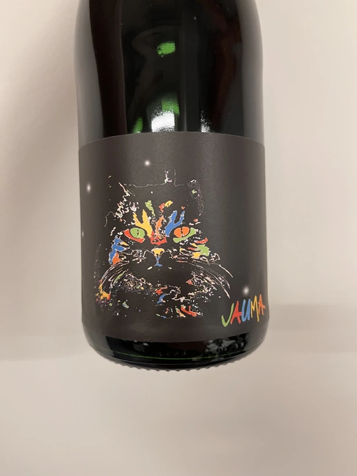

- Type
- Red Still, Dry
- Producer
- Jauma
- Vintage
- 2018
- Location
- Australia, McLaren Vale
- Grapes
- Syrah, Grenache
- Alcohol
- 11.5
- Sugar
- 0.1
- Price
- 793 UAH
- Cellar
- N/A
Producer
Adelaide Hills is home to many incredible wineries that turn the perception of Australian wines upside down. They can be light, fun and still be fine and complex. Jauma is a small farm and winery from Lenswood, Peramangk Country. The name comes after the Catalan variant of its owner’s first name - James Erskine, award-winning ex-sommelier and now a prominent winemaker.

Akin to Anton van Klopper from Lucy Margaux, James worked in the hospitality business before jumping the fence to the world of wines. Over the years, James earnt an Honours Degree in Agricultural Science (Oenology), a sommelier of the year gong, and topped the class at the Court of Master Sommeliers exams in Melbourne in 2008.
Yet winemaking attracted James. Even at the peak of his sommelier career, James spent plenty of hours among the vines. As a member of The Natural Selection Theory, he worked on experimental wines with Sam Hughes, Anton van Klopper, and Tom Shobbrook.
From this experience, Jauma was born in 2010. Their first harvest happened in the same year. James sourced grapes from McLaren Vale instead of Adelaide Hills. In 2011 he met a like-minded grower in Fiona Wood. Since then, she has helped James with leased vineyards.
Jauma Farm in Lenswood, Peramangk Country, was purchased by James in 2018. He planted it with Chenin Blanc, Savagnin, Cabernet Franc, Gewürztraminer, Pinot Gris and Sauvignon Blanc. And in the years to come, we shall see wines produced from James’ own grapes.
Ratings
2022-12-22 - 7.50
A lovely fruit-forward blend of Shiraz and Grenache with a slightly restrained yet beautiful aroma of cherry, violets and earth with a barnyard touch (if you dislike this, just give it some time to breathe away). Some would say that it’s boring, but the quality of the fruit here is good, the structure is good, and it’s well-balanced.
Related